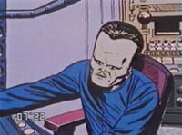
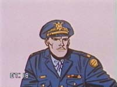
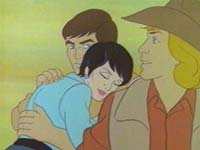
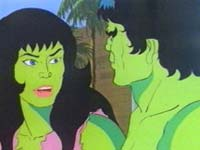
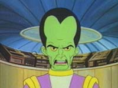
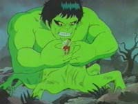
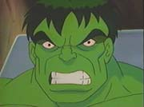
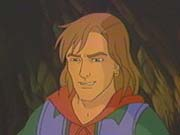
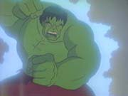

|
Introduction
Comics
Information
Villains
TV Series
Animated Series
Movies
Photo Gallery
Video Games
As A
Whole
|
Animated Series
of the

|
There have
so far been 3 separate cartoon series of The Incredible Hulk, spanning 4
decades. Here's some information about them, including various stills from
each of the three versions: |
1966
|
This
first Incredible Hulk cartoon series aired in the USA toward the end of
1966. It was a 13 episode series which featured stories adapted and
artwork taken from The Incredible Hulk and Tales to Astonish comics of the
60's. I first saw these Hulk toons on Australian television way back in
1983, together with Captain America, Iron Man, Thor and Sub Mariner
episodes from the same series. I'd get up two hours before primary school
just to watch them, as did most of my friends. |
The following 9 stills are from the intro to this cartoon:
Here are further stills for your viewing pleasure, taken from various
episodes of this first classic Hulk cartoon series:
 |
 |
 |
| The mighty Hulk,
mid-leap! |
The good doctor -
with that uncanny ability to transform from the Hulk with his spectacles
miraculously appearing from outta thin air! |
The Hulk's loyal sidekick Rick Jones, looking very 60's. |
|
 |
 |
 |
Anyone know who provided the voice for the Leader? Whoever it was
did a perfectly sinister job! |
"Thunderbolt" Ross and Major Talbot never much liked the
green-tinted one: "Get that blaaaaaaasted Hulk!!" |
Major Glenn Talbot ponders the Hulk's
capture.. |
1982
|
Regarding animation, this second toon kicks the first one's green
butt. Personally though, I don't like this cartoon as much as the 1966
version. Perhaps because the stories were only distantly related to the
comic book. Also, The Hulk's green skin is way too bright in this version.
Being made in the 80's, you would expect that when the Hulk transforms
back to Banner, his clothes would not miraculously appear on him from out
of nowhere. Not so, in fact it happened on many transformations throughout
this 13 episode cartoon. The episode Enter She- Hulk was great to
see back in the 80's as I had never seen her appear in any other cartoon,
until the 1996 version of course.
Two of the characters in this cartoon could have been better
created I feel: Rick Jones looked like a hippy cowboy and Betty was, and
looked like a science geek. But apart from a few minor dislikes, this
series definetly gets my big tick of
approval! |
The following 9 stills are from various episodes of this
cartoon:
 |
 |
 |
The mighty Hulk prepares to demonstrate the power of those big
green feet during the opening sequence of each
episode. |
Taken
from the opening sequence. |
"Don't make me angry.." |
|
 |
 |
 |
|
|
She-Hulk and the Hulkster team up to take down the hordes of Hydra
in the episode Enter: She Hulk. Bruce actually had control of the
Hulk's mind in this episode for a brief period. |
The
green cousin combination! |
|
 |
 |
 |
The evil Leader! He only appeared in one episode of this series -
`Punks On Wheels'. |
General "Thunderbolt" Ross got to know failure pretty regularly in
these episodes. But did he give up? |
Part of an eerie nightmare sequence in the mind of the tormented
Dr. Banner! |
1996
|
In my opinion this is the best Hulk cartoon series of the trio. The
intro sequence is fantastic - it reminds me so much of the flashbacks and
nightmares had by the Hulk/Banner in many of the comic stories through the
years. In terms of sound and animation - this toon is very modern compared
with the first two versions. It seems to have an almost `cinematic' feel
about it. The appearance of the characters as a whole bare good
resemblance to their comic versions.
Great to have the legendary Lou Ferrigno involved as the voice of
the big green one. Another thing that impressed me is the recap of the
origin of the Hulk in Return of The Beast, the first two-part
episode. Although the bomb trench is not simply a ditch in the ground,
more a small building - the dramatic first transformation saw the grey
Hulk emerge briefly - seconds before the green Hulk gained the upper hand.
This was great to see, not only from my point of view as a grey Hulk fan,
but also to see the origin stay true to comics in that the grey Hulk was
first to appear, albeit for about 5 seconds here! During the 2nd season of
the series the grey Hulk features regularly, and if you've been lucky to
catch those episodes you'll understand why he gets my tick of
appoval.
The Leader is great! His voice, appearance and world-conquering
attitude was cool to see. Great also was the inclusion of the Gargoyle,
although I'm not sure if I like the idea of the Gargoyle serving under the
Leader. The Gargoyle was a powerful foe in his only ever comic book
adventure with the Hulk, the comic debut way back in 1962. Serving under
the Leader just doesn't seem right, although it does make the Leader
appear more dangerous! |
The following screen shots are taken from the pilot
episode of the latest and possibly greatest Hulk cartoon
series:
|
 |
 |
 |
The Hulk prepares to wreck havoc in Banner's secret
lab! |
Rick stills sports a vest, just like in the 1982 cartoons. Good to
see he's lost that whacky cowboy hat though. |
The super-genius Leader ponders the capture of the
Hulk. |
 |
 |
 |
The Gargoyle is back! - Great to see the writers of this toon did a
little Hulk history research! |
The Abomination looks great in a cartoon. A little slow for the
Hulk's fist however on this occassion. |
The Leader attempts to drain the Hulk's energy and transfer it into
himself... |
| |
 |
|
|
|
...but the Hulk's loyalty to the endangered Betty and Rick proves
to be too strong! |
|
RETURN TO THE HULK'S INTRODUCTION PAGE
|